k-Day 039｜北塔博物館
睜開眼發現帳篷外面已經亮了，看了看手機才五點半不到。公雞們陸續睡醒了，手機滑出睡袋，電量掉了七成。氣溫顯示0度。
實在不想掀開睡袋，這麼冷不會有人早上五點出門運動吧。
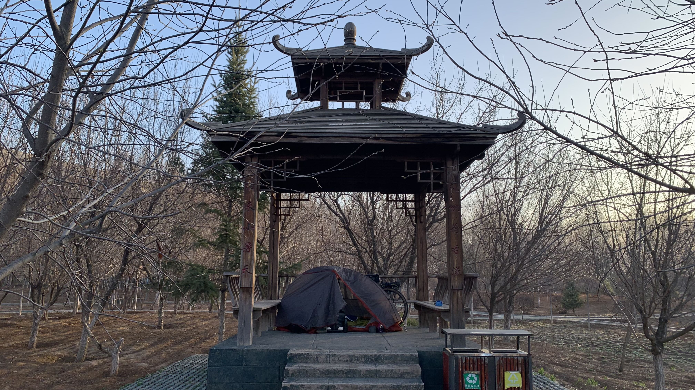
秉持著至少睡到六點的堅持，出帳篷時已經是這麼顯眼的狀態了。花了半個小時收拾，又清理了鏈條，自從大風天後有一格變速就一直卡住，到朝陽後的首要任務就是帶他給車店醫治。
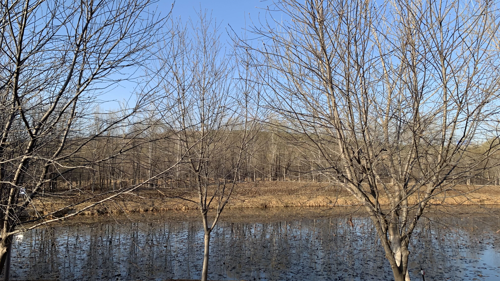
涼亭面對的是荷花池，旁邊有垃圾桶，公園有公廁，夏天來的話在這裡露營應該更愜意。
七點準時出發，清潔隊的隊員們已經聽完晨間訓話分別到公園各處打掃。一路過來錦州的衛生習慣確實比大連好很多。
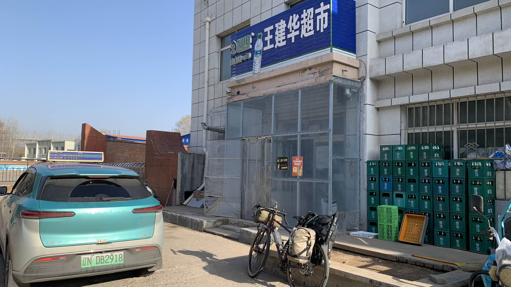
出發大約五分鐘，看到一隻小白狗，跟著他找到一間超市。三個水壺都見底了，昨天一整天也只吃了泡麵和巧克力和一包蛋白粉，看來往後需要備好更充足的資源才行。
問老闆有沒有牛奶，他說有這個哇哈哈AD鈣，那再加一包碳水吧。喝起來是酸奶的味道，意料之外。
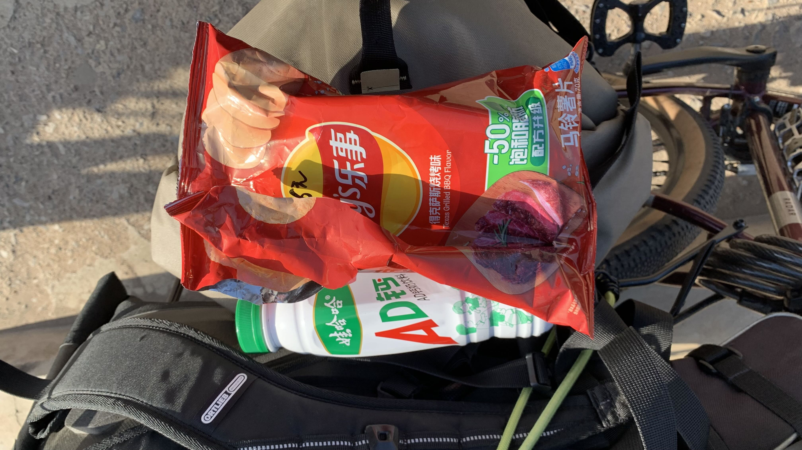
坐在門口的時候有位不知道是客人還是老闆的大哥走來說你是台灣人啊？從日本騎過來啊？早餐就吃這個啊？你什麼國家的語言都會說啊？還會說我們的話。我和大哥說台灣人也說中文，他相當吃驚。
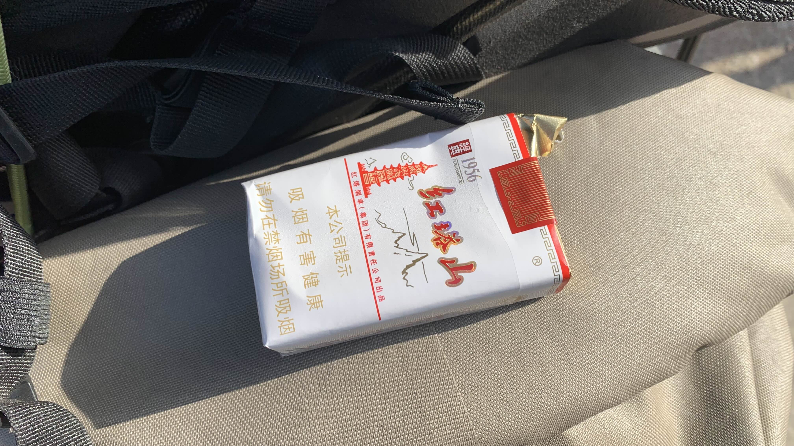
聊了一會他似乎被交代去採買，送了我一包煙並合照後說：「我兩真有緣啊！」就開著車離去。
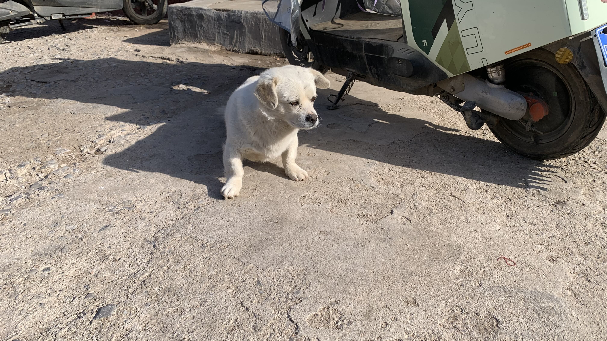
小白狗坐在門口陪我吃早餐。
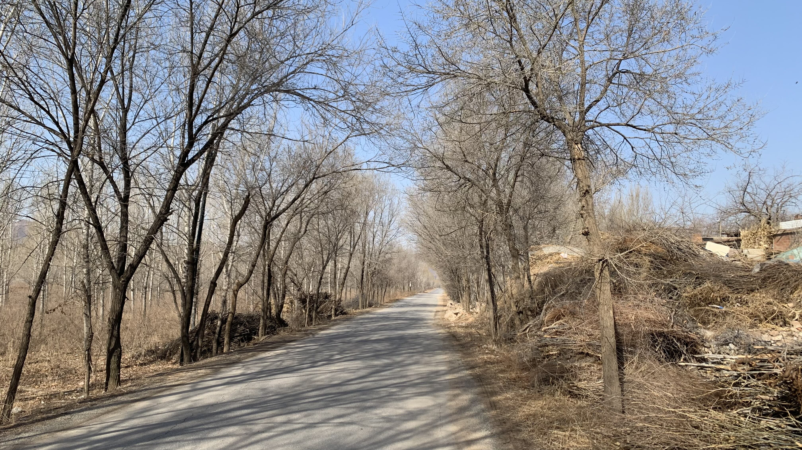
吃飽喝足後往朝陽邁進。從第一天就看到路邊堆著很多像是玉米莖的乾燥物，今天仔細一看似乎不是。
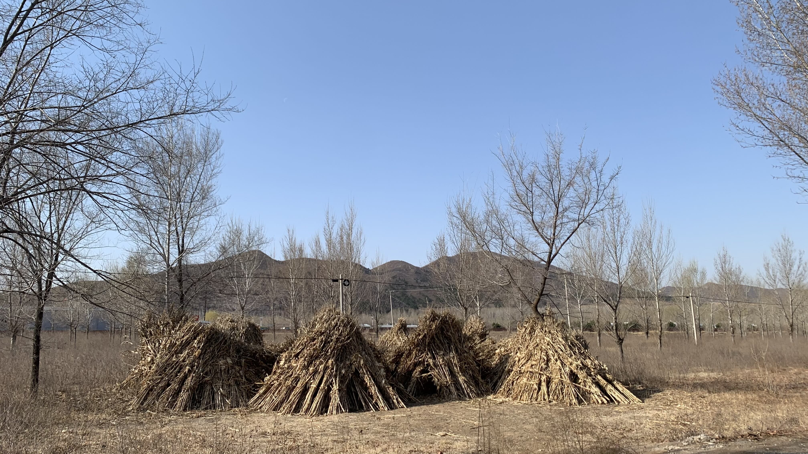
大部分堆成圓錐狀，更大量的會以樹幹為中心成捆綁住。
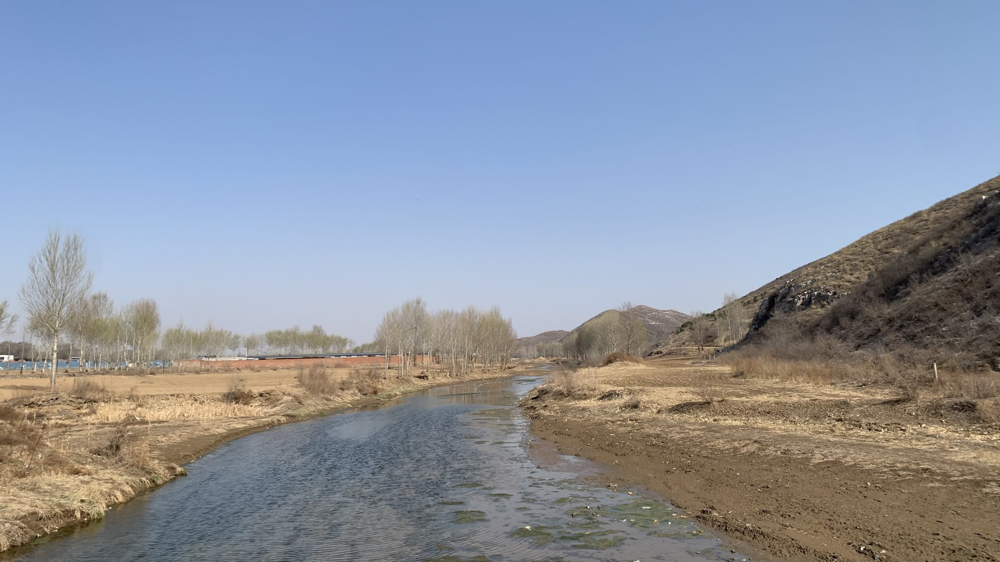
昨天下山後地貌似乎就不太一樣了，很遠的地方看到放羊的人，山上也是草比樹多的感覺。
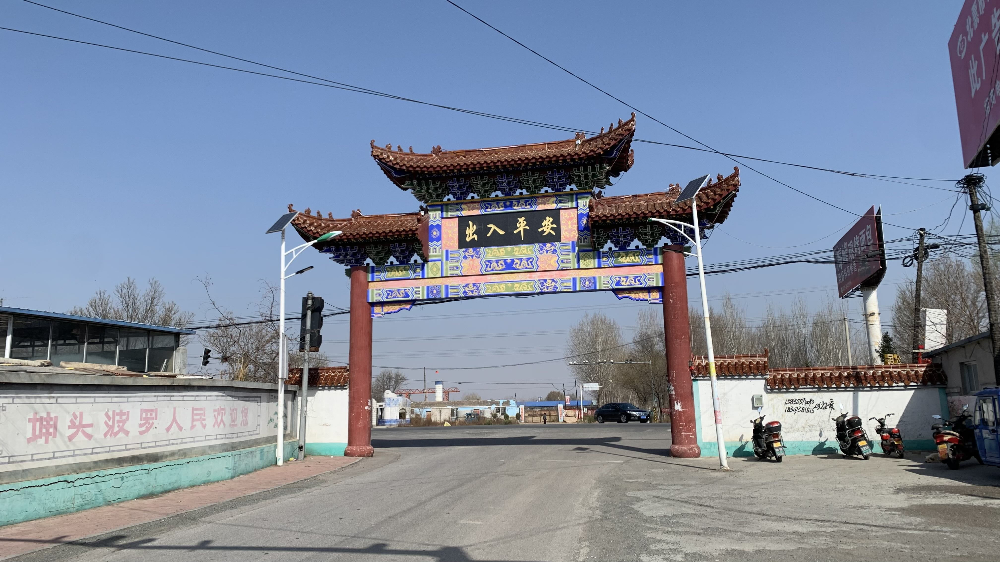
比較大的鎮在國道出入口會設置這種牌樓，我覺得比起「謝謝您光臨某鎮」，坤頭波羅村寫上「出入平安」有種貼心感。
看到上桃花公路休息處，就下來上個廁所，所謂的休息處也是可以停兩三輛車，有個涼亭和旱廁的配置。上了廁所後坐在涼亭吃剩下的薯片，信箱跳出財政部發票中了1500元的訊息。今天必須得吃好的。
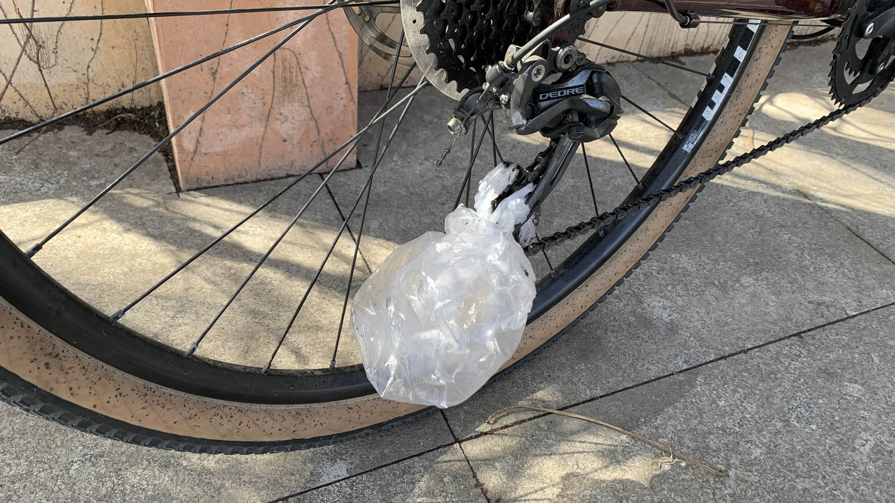
一上車就被不知道哪裡飛來的塑膠袋卡進導輪。上面的標籤6.4元，不知道買的是什麼，剛好黏進縫隙裡。拔出來後還是有點不順暢，本來就狀況不佳的變速現在更尷尬了。
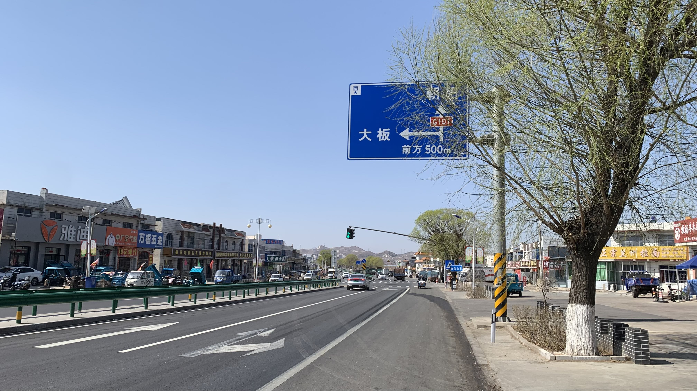
再往前騎，看到大板的路牌，昨天山裡的大哥就是建議我從那個方向沿著大凌河直接過來，但是我一過河就又往北繞了一些。
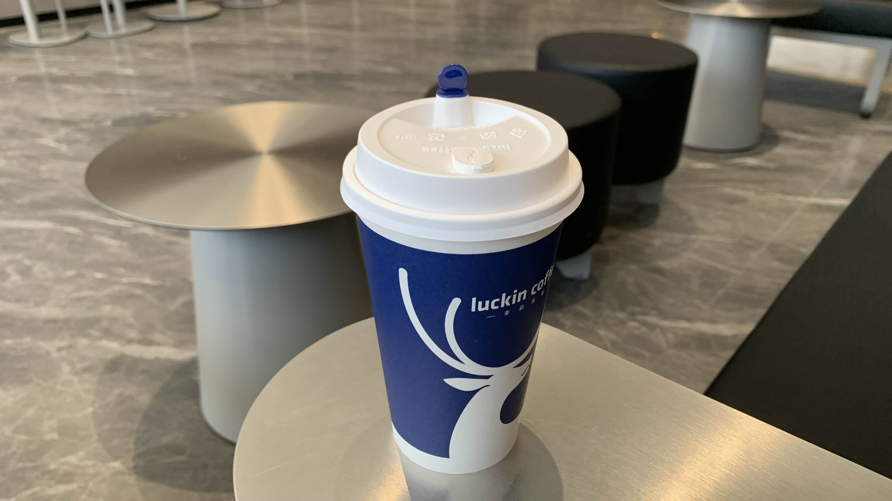
11點進城，第一件事就是喝咖啡，地圖上沒有找到有特色的小咖啡店，倒是在路邊看到這間聽說很有名的咖啡。一杯拿鐵15元。
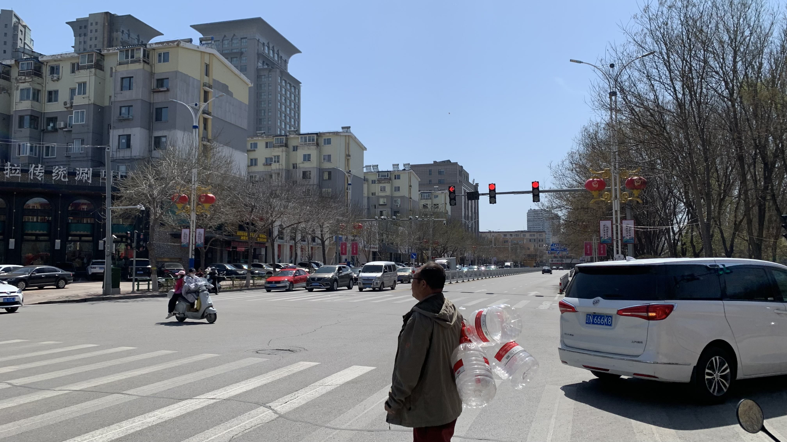
朝陽市區道路頗有規劃，右側是自行車和電動車共用車道。白色那輛車沒有闖紅燈，中國的交通規則似乎是紅燈可以右轉，如果路小一點，大車也會開在電動車和自行車後面。如果要等紅燈直行的話必須往十字路口中間或人行道的邊緣靠，有些電動車被後方右轉車輛按喇叭後會選擇直接闖紅燈過去。
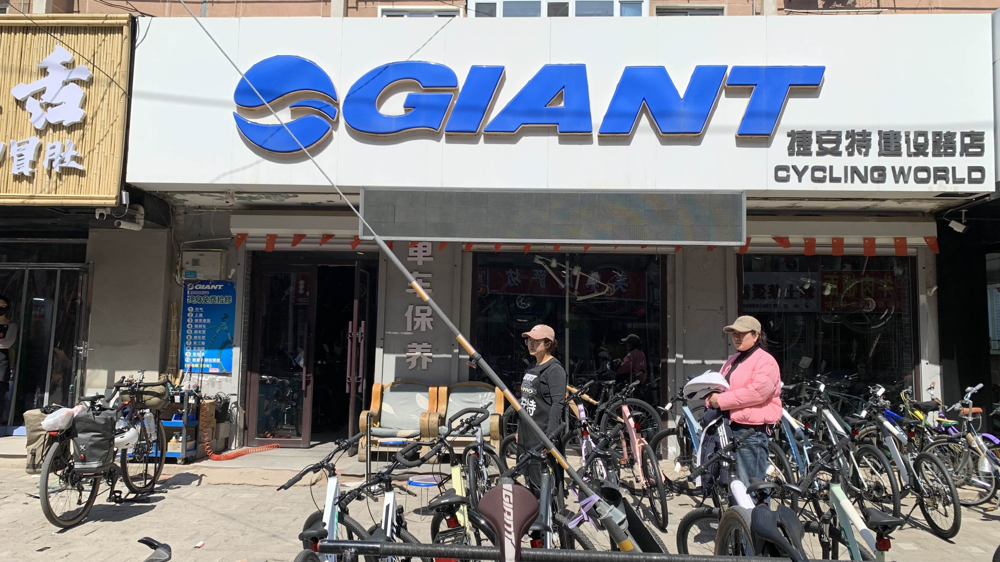
很快地來到聽說很出名的捷安特分店，老闆正在吃午飯，在外面參觀的時候有很多家長帶著小朋友來買車。
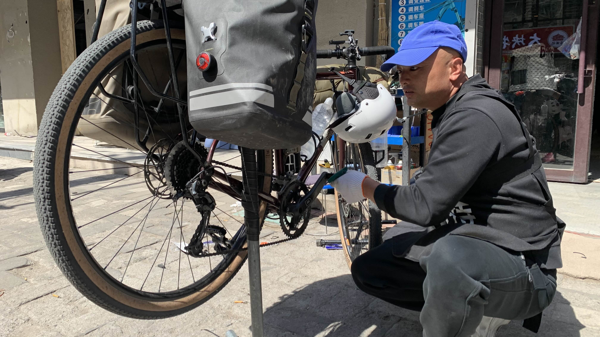
維修的時候老闆胸前背著運動相機紀錄，調整完後和我解釋後面那個變速的腳歪了一點，調回去了，並和我講解之後遇到問題可以怎樣簡易調整。
修車的時候遇到一個導遊，和我介紹周邊的景點。他們夫妻說之前帶一個台灣人去看恐龍化石，但他沒啥興趣。我說我也沒啥興趣，但是前兩天去了奉國寺和萬佛堂石窟，待會會去看南北塔。她問我：「你是怎麼知道這些景點的，是小紅書嗎？還是抖音快手？我想知道我們遼寧都在哪些平台打廣告。」相當遺憾我是從書上看來的，遼寧政府應該多多向海外推廣這些景點才是。
車子修好了，老闆不收錢。我問他：「能不能買個裝前燈的支架，迪卡儂的車燈買到現在都還找不到地方裝上去。」他和旁邊的公路車客人看了我的燈後，就開始幫我找地方安裝，最後把右邊把帶往旁邊纏了一圈，就多出剛剛好的位置扣上去。一樣不收錢。於是我就說：「老闆，我之後還得騎很遠，怕鏈條有問題，能不能買個鏈條快扣？」他又送了我一個。
實在想不到可以買什麼了，但之後會需要攜帶更多的水。我就說：「老闆，聽說往內蒙要帶很多水，我跟你買個水壺架吧。」老闆說：「你這都已經兩個了，這邊還有一個，要是再多的你就放到後面就行了。」再問下去我怕老闆必須送我水壺架了，只好感謝他。
修車期間有很多來買新車或者做舊車調整的人，老闆陸續招呼他們。於是問了跟老闆一起幫我裝燈的公路車小哥，朝陽有什麼特色美食？這麼一問他說他一時也想不出來。
我接著說：「遼寧這邊的肉是不是比較少？我從大連到這裡，吃到的肉好像只有這麼一點點🤏，我比出了一點點的手勢。」他聽到這話原本斯文的臉上出現了準備接受挑戰的神采，立馬問我：「你想吃什麼肉？」「就是很大量的肉，騎車餓了會想吃的那種。」
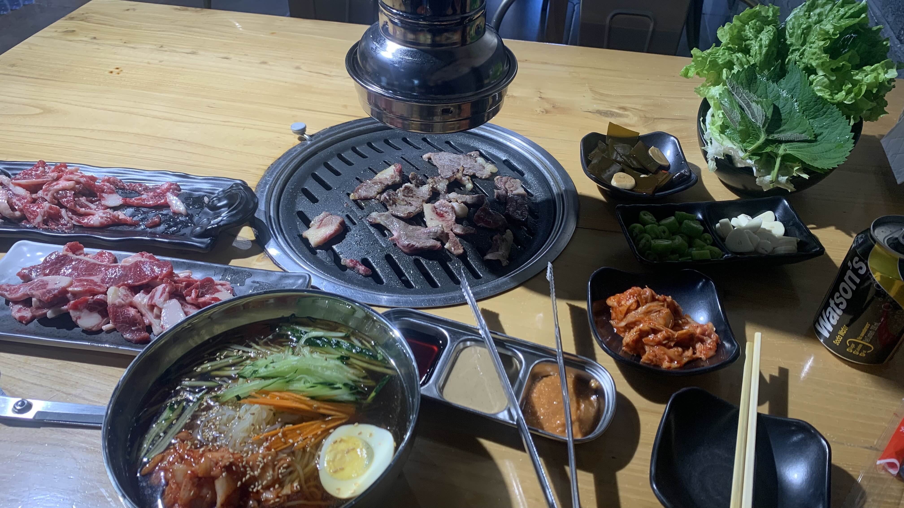
就這樣，我在韓國沒吃到的韓式烤肉出現了。
點了一肥一瘦的牛肉、一碗冷面和一瓶蘇打水。可不可以往後幾天都找到合適的露宿地點呢，真想把房費都用在這些好料上。烤肉店老闆夫婦都很友善，我牽著車在門口找地方靠的時候就要我靠在他們車上，離開時還拿礦泉水幫我把水壺加滿。加滿一瓶還想拿第二個寶特瓶時我趕緊說：「這樣就可以了，非常謝謝。」
吃飽後回到雙塔區，十分著名的朝陽南北塔所在地。
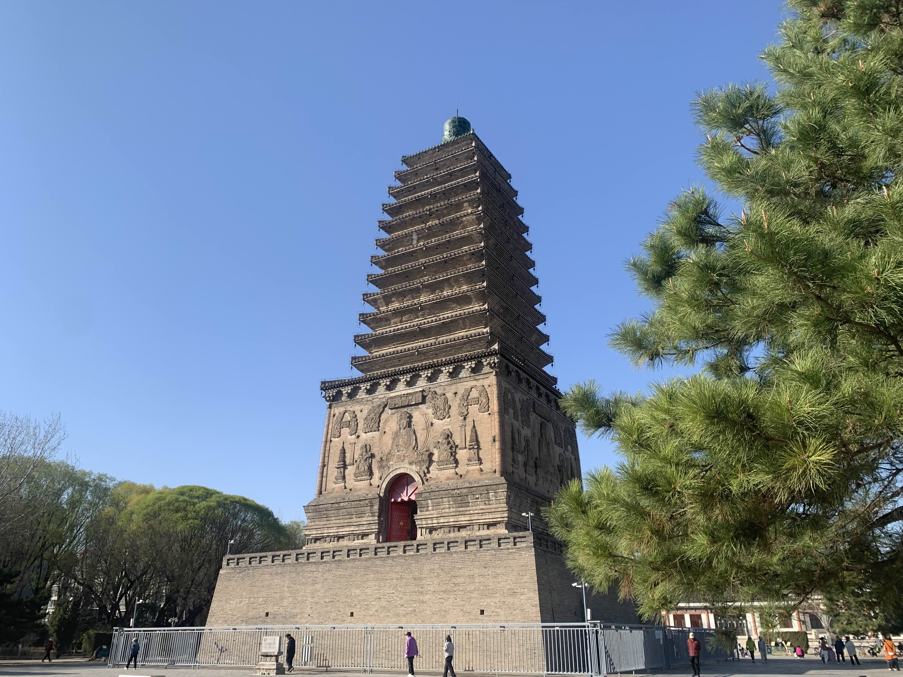
北塔上有佛像石刻，因此廣場上陸續有前來鞠躬參拜的人。周圍的長椅上有許多老人在打牌聊天休息。相當日常的氛圍，幾乎會讓人覺得也許一千年來這地方的安逸氣息都沒有變過。當然是不可能，每個時代都有戰亂。
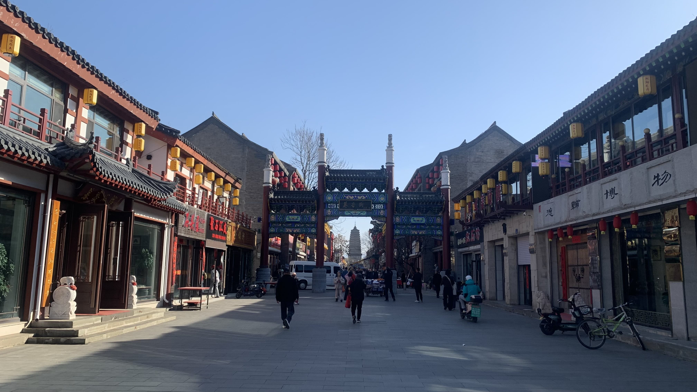
隔著這條慕容街，兩個塔遙遙相望。作為仿古街道，賣的都是些古玩玉石什麼的。遼代當然不是這樣的，身為朝陽的精神脊梁，這條中軸線曾經承載著契丹精神。喔，還有鮮卑和漢人。
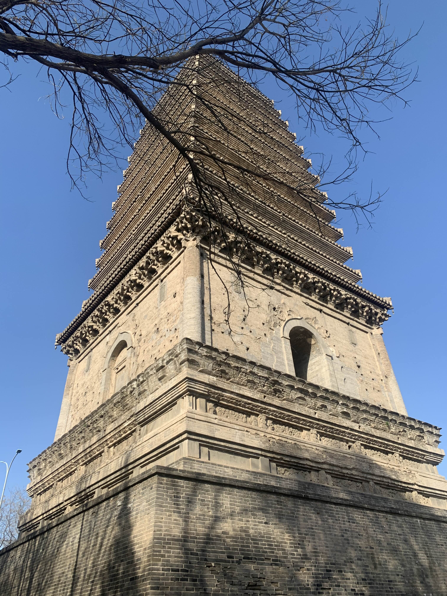
沿著慕容街走到南塔下方。南塔下的廣場人潮相比起來少了很多，應該說幾乎沒有人。可能是這座塔上沒有佛像，也可能純粹北塔的廣場比較大，周邊設施像是松樹樹蔭下的長椅、公共廁所比較完善。總之這座由契丹人建立起來的南塔並沒有他對面的兄弟那麼大名聲。
那麼為什麼來看這兩座塔呢？我本人對於套娃似的五代同堂沒什麼共鳴，但是契丹人會建立兩座相對的塔一定有其原因，因此才想到現場，在他倆周邊轉轉，親自感受一下。明天準備多待一天參觀北塔博物館和地宮，希望能獲得一些資訊。
奉國寺也是遼代建築，裡面的佛像以中間向左右兩邊分別排列，如果看他們的姿態，可以看出其間的流動性是往兩邊延展的。建築也和日本的佛寺不同，裡面的樑柱為空間建立了明確的架構，排列上也具備視覺和身體上的節奏感。如果奉國寺中以可見之物創造對稱延展的流動力場是遼代的宇宙觀，那麼多蓋一座南塔就可以理解了。
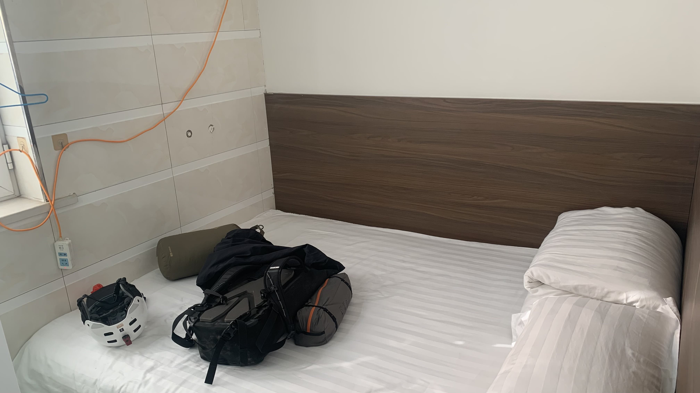
正逢週六，城市裡房價昂貴，找到一間相較之下便宜一點的賓館。一切需要的都有，視覺和嗅覺都算得上乾淨（我懷疑自己的標準正在逐漸調整）不過隔壁的廣東話同胞講電話的聲音幾乎就像是躺在我旁邊。剛剛有一隻腿部健壯的小蜘蛛爬到手機螢幕上，希望睡覺不要壓到他。
今日花費： 飲料10、士力架＋電解水 15、泡麵＋水＋電解水 15元